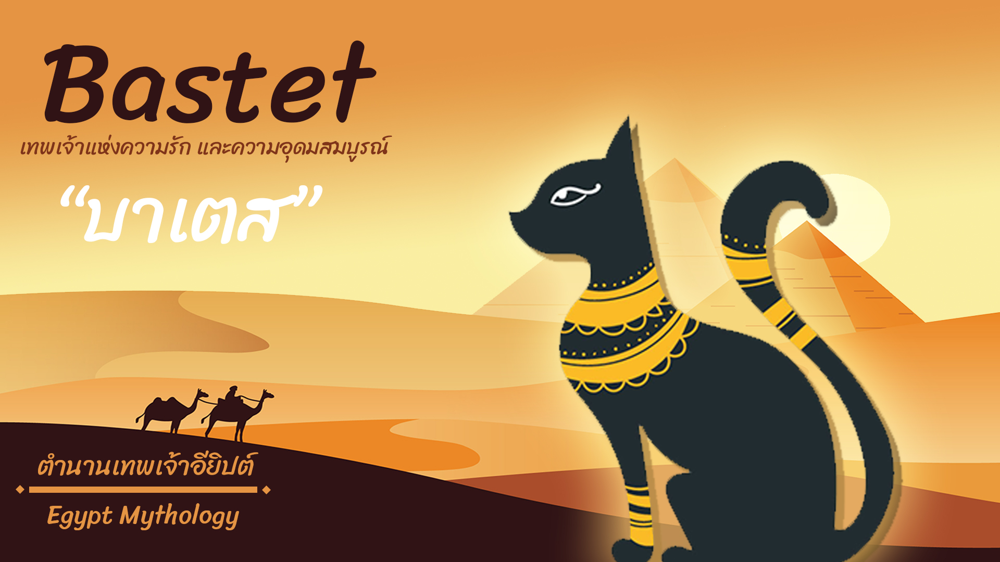

“Bastet” (เทวีบัสเตต) เป็นเทพเจ้าที่ชาวอียิปต์นับถือ เทพเจ้าองค์นี้มีกายเป็นคน แต่มีศีรษะเป็นแมว และถือเป็นเทพเจ้าแห่งความรัก และความอุดมสมบูรณ์ ความเชื่อของชาวอียิปต์กล่าวไว้ว่า นอกจากแมวจะเป็นสัตว์ที่มีไว้จับหนูในโรงนาแล้ว
แมวยังทำหน้าที่จับหนูบนเรือสินค้าได้อีกด้วย ด้วยเหตุนี้จึงเกิดเป็นความเชื่อขึ้นมาว่า เมื่อเรือเดินสินค้าเข้าเทียบท่า แมวจึงเดินลงไปจากเรือ และไม่ได้กลับขึ้นเรืออีก ซึ่งเป็นผลให้แมวถูกขนายพันธุ์ไปทั่วโลกได้นั่นเอง

ชาวอียิปต์โบราณ นั้นนับถือแมวเป็นอย่างมาก หากผู้ใดฆ่าแมวจะต้องถูกลงโทษอย่างหนัก และถือว่าแมวเป็นสัตว์เทพเจ้าของอียิปต์โบราณ หากบ้านใดมีแมวเสียชีวิตในบ้าน จะต้องนำเอาศพแมวเหล่านั้นไปทำมัมมี่ ซึ่งด้วยความเชื่อดังกล่าวนี้ จึงทำให้บุคคลที่ต้องการยึดอำนาจการปกครองอาณาจักรอียิปต์โบราณ ออกอุบาย “อุ้มแมวไปรบ” ซึ่งส่งผลให้พวกทหารอียิปต์ไม่สามารถสู้ศัตรูได้ (แมวเป็นเพียงส่วนหนึ่งของการรบ แต่อียิปต์ไม่ได้ล่มสลายเพราะแมว) และแม้ว่าอียิปต์โบราณจะหมดยุคไปแล้ว แต่ชาวอียิปต์ในสมัยก่อนก็ยังคงนับถือบูชาแมวเช่นเดิม ถึงขนาดที่หากชาวโรมันคนไหนฆ่าแมว ก็ยังต้องถูกพวกอียิปต์ลงทัณฑ์

เวลาผ่านไป จนล่วงเข้าสู่ยุคกลางในยุโรป เกิดมีความเชื่อเรื่องแม่มดและความชั่วร้ายต่างๆเข้ามา ชาวยุโรปในยุคที่ว่านี้กล่าวอ้างว่า แมวโดยเฉพาะแมวดำเป็นสัตว์เลี้ยงของแม่มด
เพราะฉะนั้น หากบุคคลใดเลี้ยงแมว ก็จะถูกกล่าวหาว่าเป็นแม่มดร้าย และหากบุคคลนั้นเป็นคนแก่ด้วยแล้ว บุคคลพวกนี้ก็มักจะโดนทำโทษโดยการเผาทั้งเป็นร่วมกันทั้งคนและแมว เมื่อแมวถูกฆ่าเพิ่มมากขึ้น จึงทำให้หนูมีปริมาณมากขึ้น และเกิดเป็นโรคระบาดอย่างหนักในยุโรปสมัยนั้น
ในช่วงสมัยที่ใกล้เคียงกัน ชาวเอเชียอย่างชาวญี่ปุ่นและชาวจีน ก็เริ่มหันมาเลี้ยงแมวกันมากขึ้นกว่าแต่ก่อน นอกจากนี้ ในประเทศญี่ปุ่น ยังใช้แมวเป็นสัญลักษณ์แห่งการนำโชคอีกด้วย
ดังจะเห็นได้จากตุ๊กตา “แมวกวัก” ที่มักวางโชว์กันหน้าร้านค้า เพื่อใช้กวักเรียกลูกค้าหรือกวักเงินให้ไหลมาเทมานั่นเอง ส่วนชาวจีนก็เชื่อกันว่า แมวเป็นสัตว์นำโชคเช่นกัน เนื่องจากเมื่อแมวเข้ามาอยู่ในบ้านของมนุษย์คนใด ก็ต่อเมื่อมันพอใจที่จะอยู่เท่านั้น
และเมื่อมันเข้ามาอยู่ในบ้านกับเจ้าของบ้านแล้ว ก็มักจะนำโชคลาภเข้ามาสู่เจ้าของบ้านได้เสมอ